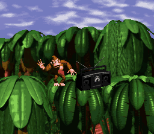

Donkey Kong
Donkey Kong is a video game series created by Shigeru Miyamoto. It follows the adventures of an ape named Donkey Kong and his clan of other apes and monkeys. The franchise primarily consists of platform games, originally single-screen action puzzle games, and later side-scrolling platformers. The first game was the 1981 arcade game Donkey Kong, featuring the eponymous character as the main antagonist in an industrial construction setting and the debut of both the Donkey Kong and Mario characters. The game was a massive success and was followed by two sequels released in 1982 and 1983. In 1994, the franchise was relaunched with the platformer Donkey Kong Country, in which Donkey Kong defeats a variety of anthropomorphic enemies, mainly the Kremlings, a clan of crocodiles led by King K. Rool who antagonize the Kongs by stealing their banana hoard.
Games outside the platforming genre include spin-offs of various genres including rhythm games such as Donkey Konga, racing games such as Diddy Kong Racing, and edutainment such as Donkey Kong Jr. Math. An icon of the Donkey Kong franchise is barrels, which the Kongs use as weapons, vehicles, furniture, and lodging.
The Donkey Kong franchise has sold a total of over 80 million copies worldwide as of 2022.
Projects
Donkey Kong Country (1994)
Donkey Kong 64 (1999)
Donkey Kong Country Returns (2010)
Skills
Strong AF
Big
Barrel Operation
Dancing